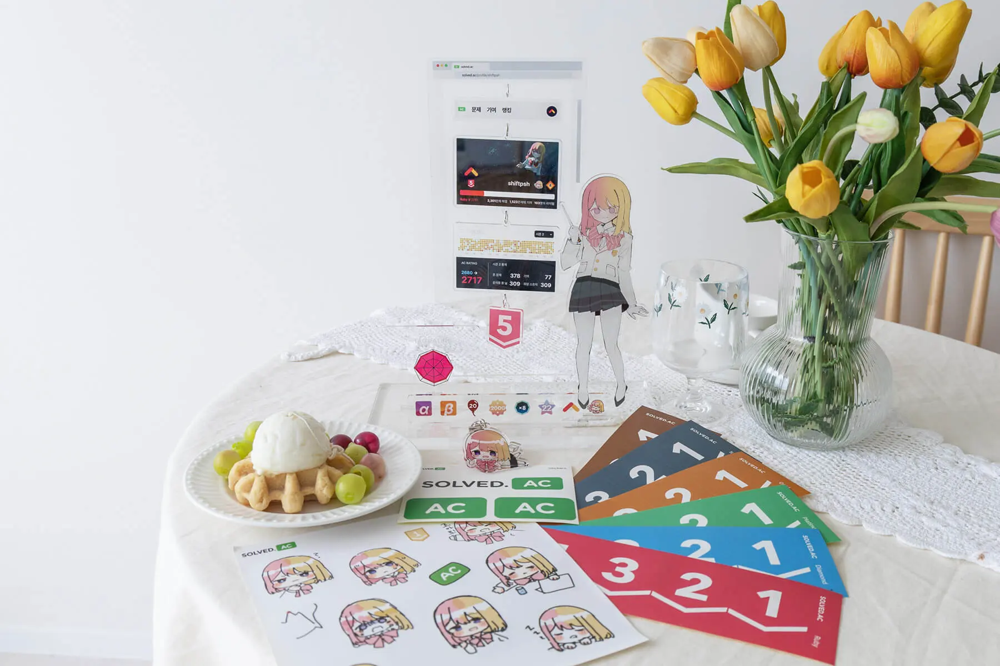

- 업데이트
- /
- 시즌 4 업데이트 (2024년 6월 5일)
시즌 4 업데이트 (2024년 6월 5일)
안녕하세요! 우리 모두가 만들어가는 알고리즘 문제해결 학습의 이정표 solved.ac입니다.
2024년 6월 5일은 BOJ와 solved.ac가 통합된 지 4년째가 되는 날입니다. solved.ac는 악 1년 주기의 시즌 업데이트를 통해 새로운 기능과 변경점을 도입하고 있습니다. 올해는 4주년을 맞아 시즌 4 업데이트를 진행하게 되었습니다.
랜덤 마라톤 (Beta)

새로운 문제해결 콘텐츠 〈랜덤 마라톤〉이 추가됩니다. 랜덤 마라톤은 solved.ac 로그인 후 메인 페이지에서 확인할 수 있습니다.
한 주 단위로 티어에 따라 8개 문제가 랜덤으로 선정됩니다. 선정된 문제를 해결하면 다량의 별조각과 도전과제 프로필 뱃지를 획득할 수 있습니다.
개인의 티어와 전 주의 문제 해결 상태에 따라 선정되는 문제의 난이도가 달라집니다. 첫 랜덤 마라톤 코스는 업데이트가 진행되는 2024년 6월 5일(수) 오전 6시UTC+9부터 1주간이며, 이후로도 매주 수요일 오전 6시UTC+9부터 화요일 오전 6시UTC+9까지 진행됩니다.
랜덤 마라톤은 베타 서비스로, 피드백을 통해 꾸준히 개선될 예정입니다.
프로필 배경 상점
코인샵에 프로필 배경 상점이 따로 추가됩니다. 시즌 4를 시작으로 프로필 배경 상점 전용으로 추가되는 새로운 배경들을 만나보실 수 있습니다.
기여: 문제 오류 및 동일한 문제 신고 기능 (예정)
기존에 solved.ac Discord 채널에서 논의되던 문제 오류 및 동일한 문제 신고는 이번 시즌부터 기여 화면에서 바로 할 수 있도록 개선될 예정입니다. 기여 화면 업데이트는 7월 중으로 이뤄질 예정입니다.
CLASS 문제 구성 변경
일부 CLASS의 구성이 아래와 같이 변경됩니다.
 CLASS 1
CLASS 1
- 추가: #31403 〈〉
- 삭제: #1157 〈단어 공부〉
 CLASS 2
CLASS 2
- 추가: #28702 〈FizzBuzz〉
- 삭제: #18111 〈마인크래프트〉 (CLASS 3로 이동)
 CLASS 2 에센셜
CLASS 2 에센셜
- 추가: #30802 〈웰컴 키트〉
- 삭제: #10866 〈덱〉
 CLASS 3
CLASS 3
- 추가: #1620 〈나는야 포켓몬 마스터 이다솜〉
- 추가: #18111 〈마인크래프트〉
- 추가: #30804 〈과일 탕후루〉
- 삭제: #1107 〈리모컨〉
- 삭제: #2805 〈나무 자르기〉 (에센셜로 변경)
- 삭제: #20529 〈가장 가까운 세 사람의 심리적 거리〉
 CLASS 3 에센셜
CLASS 3 에센셜
- 추가: #2805 〈나무 자르기〉
- 삭제: #1620 〈나는야 포켓몬 마스터 이다솜〉 (일반 문제로 변경)
 CLASS 4
CLASS 4
 CLASS 5
CLASS 5
- 추가: #15681 〈트리와 쿼리〉
- 추가: #28707 〈배열 정렬〉
- 삭제: #4386 〈별자리 만들기〉
- 삭제: #14939 〈불 끄기〉 (CLASS 6로 이동)
 CLASS 5 에센셜
CLASS 5 에센셜
- 추가: #7453 〈합이 0인 네 정수〉
- 삭제: #1208 〈부분수열의 합 2〉
 CLASS 6
CLASS 6
- 추가: #14939 〈불 끄기〉
- 삭제: #13907 〈세금〉 (CLASS 7로 이동)
 CLASS 6 에센셜
CLASS 6 에센셜
 CLASS 7
CLASS 7
- 추가: #13907 〈세금〉
- 삭제: #2367 〈파티〉
 CLASS 8
CLASS 8
- 추가: #14560 〈Communism〉
- 추가: #31397 〈반 나누기 (Hard)〉
- 삭제: #2519 〈막대기〉
- 삭제: #17033 〈Cow Land〉
4주년 기념 프로필 뱃지와 배경
solved.ac 4주년과 시즌 4의 시작을 기념해 아래 프로필 배경 및 뱃지가 추가됩니다.
위 뱃지와 배경은 오늘부터 2024년 6월 6일(목) 오전 6시 사이에 이전에 풀지 않았던 문제 중 아무 문제나 한 문제 이상 해결하면 획득할 수 있습니다. 배경과 뱃지는 문제를 해결하는 즉시 지급됩니다.
시즌 3 종료 보상
시즌 3에 문제해결으로 수고하신 모든 분들께 시즌 3 프로필 배경 보상을 드립니다. 자세한 내용은 아래와 같습니다.
- 배경은 2024년 6월 5일 오전 6시에 Bronze V 이상인 모든 분께 지급됩니다.
- 해당 시각 기준의 티어에 맞는 디자인의 프로필 배경이 지급됩니다.
시즌 3 마무리 기념 굿즈 샵 (예정)

시즌 3 종료를 기념하여 작년에 이어 올해도 기간 한정 굿즈 샵이 열릴 예정입니다. 준비하고 있는 상품은 아래와 같습니다.
- 여러 종류의 solved.ac 스티커
- 본인 티어 이하의 티어 아이콘 아크릴 키링
- 시즌 3 통계 아크릴 키링 및 스탠드
- 데스크 마우스패드
굿즈 샵은 6월 중순에 열리며, 7월 초까지 주문을 받을 예정입니다. 일부 굿즈를 제외하고, 전량 주문 제작으로 수량에는 한정이 없을 예정입니다. 자세한 내용은 후속 공지를 통해 전달드리겠습니다.
마무리하며
solved.ac는 알고리즘 문제해결을 사랑하는 모두가 더욱 더 재미있게 문제를 풀 수 있도록 항상 고심하고 있습니다. 사이트를 이용하시면서 불편하셨던 점이나 추가했으면 좋을 만한 기능이 있다면 언제든 부담없이 solved.ac Discord 혹은 shift@solved.ac로 제안해 주세요!
알고리즘 문제해결 학습의 이정표를 만들어가는 여정에 함께해 주셔서 감사합니다!